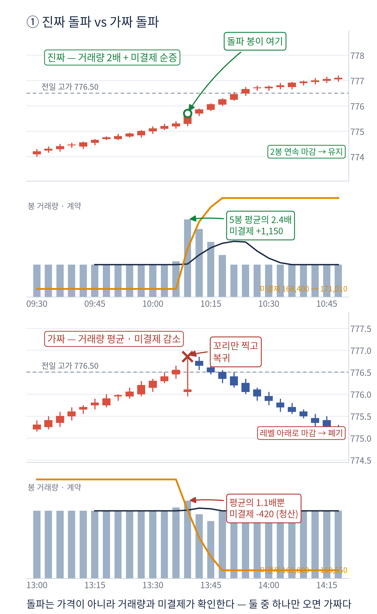
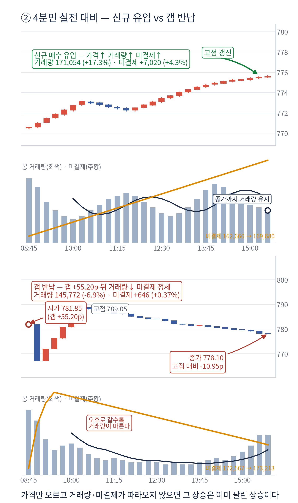
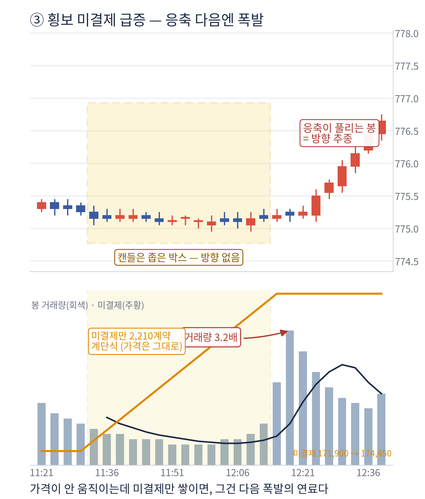
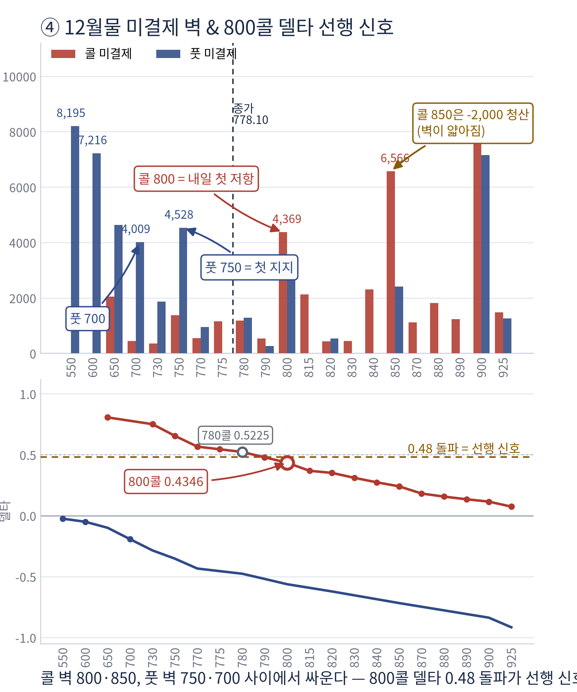
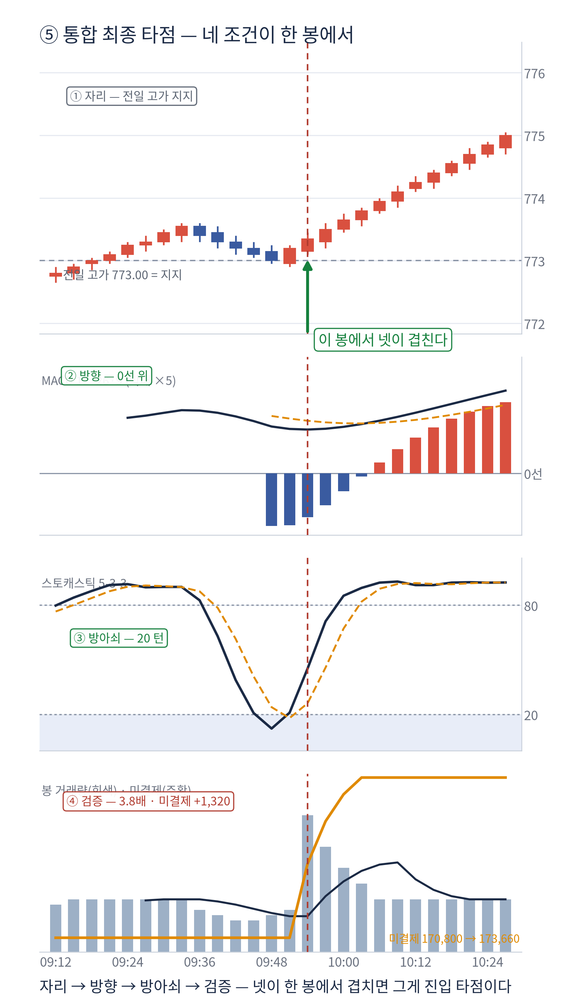

거래량은 얼마나 받아냈나, 미결제는 누가 남아 있나, 델타는 어느 쪽에 얼마나 걸려 있나를 답합니다. 셋 다 방향을 말해 주지 않습니다. 방향은 가격이 정하고, 이 셋은 그 방향을 믿을지 심사합니다. 확대 차트 다섯 장에 3줄로 정리했습니다.
가격은 +7.08% 올랐는데 거래량은 6.9% 줄고 미결제는 646계약(0.37%) 늘었을 뿐입니다. ①(신규 매수 유입)도 ②(숏 커버링)도 아닌 '힘 빠진 상승' — 오늘 같은 날 추격 매수가 전부 손실 구간에 들어갑니다.
진짜 돌파 vs 가짜 돌파(Fakeout)
전일 고가 776.50 — 거래량 2배와 미결제 순증이 함께 와야 진짜다

- 모양진짜는 돌파 봉의 거래량 막대가 직전 5봉 평균의 2배를 넘고 미결제가 같은 방향으로 늘어난다.
- 뜻거래량은 참여의 두께, 미결제는 새로 남은 사람 — 둘이 함께 늘어야 새 돈이 들어온 돌파다.
- 행동2배+순증이면 2봉 연속 마감까지 따라간다. 하나라도 빠지면 그 돌파는 버린다.
4분면 실전 대비 — 신규 유입 vs 갭 반납
같은 상승도 거래량·미결제가 갈라 놓는다

- 모양위는 가격·거래량·미결제가 같은 방향으로 올라가고, 아래는 갭 뒤 가격만 되돌아오며 거래량이 마른다.
- 뜻위는 새 매수가 계속 들어온 상승, 아래는 밤에 완성된 갭을 정규장이 반납한 상승이다.
- 행동위는 눌림 매수, 아래는 추격 금지 — 종가까지 기다려 다음 날 기준선으로 다시 잡는다.
횡보 미결제 급증 — 응축 다음엔 폭발
캔들은 좁은 박스인데 미결제만 계단식으로 쌓이는 자리

- 모양가격은 옆으로 눕고 거래량은 마르는데 미결제 선만 오른다.
- 뜻포지션이 쌓이는데 아직 방향을 정하지 못한 상태 — 다음 폭발의 연료다.
- 행동방향 예측 금지. 박스 상·하단을 거래량과 함께 이탈하는 봉만 따라간다.
12월물 미결제 벽 & 800콜 델타 선행 신호
11/24 15:46 실측 — 콜 벽 800·850, 풋 벽 750·700

- 모양행사가별 콜·풋 미결제 막대와 델타 곡선 — 종가 778.10 양옆에 벽이 서 있다.
- 뜻벽은 지지·저항의 좌표이고, 등가 콜 델타가 0.48을 넘는 것은 내가격으로 넘어가는 중이라는 뜻이다.
- 행동콜 800·850 / 풋 750·700 사이에서만 싸운다. 800콜 델타 0.48 돌파 시 돌파 추종.
1~4번 통합 최종 타점
자리 → MACD → 스토캐스틱 → 거래량·미결제, 네 개가 한 봉에서 겹치는 자리

- 모양위에서부터 지지선 반등, MACD 0선 위, %K 20 반등, 거래량 2배+미결제 순증이 같은 봉에 찍힌다.
- 뜻자리가 방향을 정하고, MACD가 추세를 확인하고, 스토캐스틱이 시점을, 거래량·미결제가 진위를 심사한다.
- 행동넷이 다 맞으면 그 봉 마감에 진입, 신호봉 저점 -1틱 손절. 하나라도 빠지면 사이즈를 줄이거나 건너뛴다.
4분면과 오늘의 칸
가격 × 거래량 × 미결제 여덟 칸
2026-11-24 실측 적용| 조합 | 판독 | 행동 |
|---|---|---|
| 상승·증가·증가 | 신규 매수 유입(롱 빌드업) | 추세 지속, 눌림 매수 |
| 상승·감소·감소 | 숏 커버링, 새 매수 없음 | 꼭대기 경계, 추격 금지 |
| 하락·증가·증가 | 신규 매도 유입(숏 빌드업) | 추세 지속, 반등 매도 |
| 하락·감소·감소 | 롱 청산·손절 | 바닥권 접근 |
| 횡보·감소·급증 | 에너지 응축 | 돌파만 따라간다 |
| 상승·증가·감소 | 청산 물량이 밀어올림 | 당일 안에 끝난다 |
| 하락·증가·감소 | 투매 + 청산 | 반등 짧다 |
| 정체·감소·정체 | 정보 없음 | 관망 |
2026-11-24 실측 — 오늘은 어느 칸인가
| 항목 | 값 | 의미 |
|---|---|---|
| 종가 / 등락 | 778.10 (+7.08%) | 갭이 만든 상승 |
| 시가 → 종가 | 781.85 → 778.10 (-3.75p) | 정규장은 오히려 반납 |
| 거래량 | 145,772 (-6.9%) | 참여 감소 |
| 미결제 | 173,213 (+646, +0.37%) | 신규 유입 미미 |
| V/OI | 0.842 (전일 0.907) | 청산·승계 우위 |
| 판정 | ①도 ②도 아닌 힘 빠진 상승 | 추격 금지 |
델타와 무효화
델타 구간별 성격
선물 대체인가, 프리미엄인가| 구간 | 델타 | 처방 |
|---|---|---|
| 심부 내가격 | 0.9~1.0 | 선물 대체·헤지 다리 |
| 내가격 | 0.7~0.9 | 추세 추종 |
| 등가 | 0.45~0.55 | 양매도 기준, 헤지 재계산 |
| 외가격 | 0.15~0.35 | 프리미엄 매수 |
| 극외가 | 0.1 미만 | 물타기 금지 |
무효화·손절
이렇게 되면 진입은 없던 것| 조건 | 행동 |
|---|---|
| 돌파 봉 거래량이 5봉 평균 2배 미만 | 진입 금지 |
| 미결제가 감소(청산성) | 진입 금지 |
| 레벨 위 2봉 연속 마감 실패 | 신호 폐기 |
| 등가 콜 델타가 반대로 움직임 | 절반 청산 |
| 미결제 벽 안쪽에서만 움직임 | 관망 |
| 손절 폭 6틱 초과 | 사이즈 축소 또는 건너뛰기 |
장중 8단계 체크
여덟 중 6개 이상 통과할 때만 진입하고, ⑤(미결제 순증)와 ⑧(손절 폭)은 필수입니다. 함정은 다섯 구간 — 롤오버 2주(11/26~12/10), 08:30~08:45·15:35~15:45 단일가, 12:00 전후, 사이드카 발동일(사이즈 1/3), 야간선물 상승(시초 재료로만).
차트 5장과 같은 내용을 인쇄용으로 묶은 PDF 내려받기 도 있습니다. 4분면 여덟 칸·실측 해석·미결제 벽·통합 4단계까지 담았습니다.
도감 4는 11/24 15:46 실측(주식광장 옵션 전광판 t2301, 근월물 778.10, 잔존 17일)입니다. 나머지 차트의 봉·거래량·미결제는 계산 설명용 가상 시세이고, 도감 2 아래는 11/24 실측 앵커(시가 781.85 · 저점 767.30 · 고점 789.05 · 종가 778.10)에 맞춘 계산용 경로입니다. 출처: KRX 코스피200 옵션·선물 상품명세, 지표담 전광판 t2301, 키움 [0441]·한국투자 [5135], StockCharts(PVO·OBV), Bessembinder·Seguin JFQA 28(1) 1993, Ni·Pearson·Poteshman JFE 78(1) 2005.